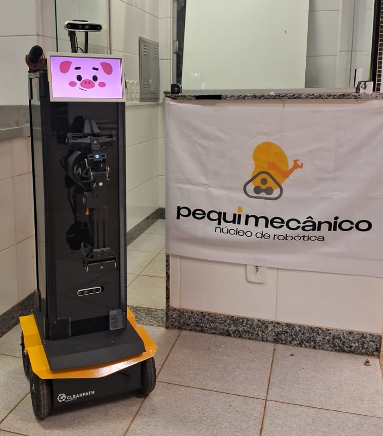

Scientific approach
We are still growing in this category, studying and researching domestic robots, while also familiarizing ourselves with the concepts and practices that can emerge from this field of robotic research. Our main areas of interest for contribution are human-robot interaction and perception.
Open source material
We are still generating, documenting, and solidifying materials for distribution to the academic community and enthusiasts.
Miss Piggy
